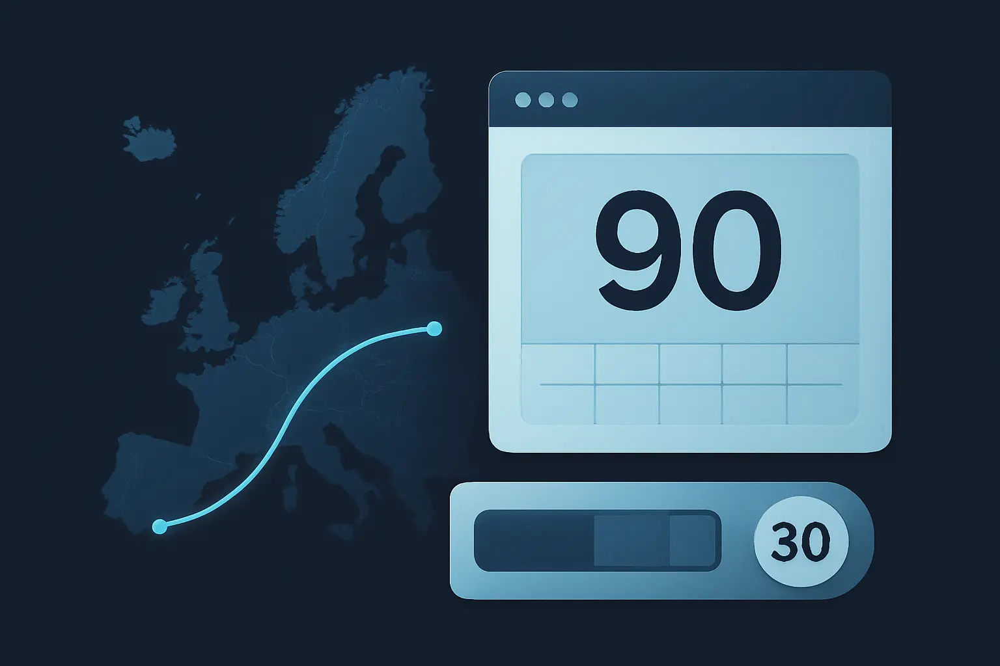

Digital Nomad Visa Day Limits: A Country-by-Country Overview
A cautious nomad-focused overview of stay patterns across common destinations, with the emphasis on how these rules differ rather than on one-size-fits-all numbers.
Last verified: March 2026

What This Page Explains
This page explains how to think about nomad stay limits across countries rather than pretending one roundup can settle every current visa rule.
- why “day limit” means different things in different destinations
- how short-stay windows, per-entry stays, calendar-year caps, and remote-work routes differ
- why country-by-country summaries age quickly
- what questions matter before you treat a nomad stay rule as reliable
Most important caution: country-by-country nomad roundups are useful for orientation, not for final decisions. The exact route, nationality, documentation, and current programme version can change faster than a general article.
The Four Patterns That Matter More Than the Country Names
- Rolling-window short stays — for example, the Schengen 90/180 model.
- Per-entry visitor stays — a country may allow a certain number of days per entry, sometimes with extensions.
- Calendar-year caps — a country may let you stay only up to a total amount within a year even if entries are separate.
- Dedicated remote-work or nomad routes — these are not just longer tourist stays; they usually have their own eligibility and paperwork.
Once you see these patterns clearly, country-by-country differences become easier to classify and much harder to confuse.
Illustrative Country Patterns
| Destination type | How it usually behaves | What to check carefully |
|---|---|---|
| Schengen destinations | Short stays pooled across the Schengen area under the 90/180 system. | Rolling-window math and shared country scope. |
| Generous visa-free long-stay destinations | Some countries allow unusually long visa-free stays for many nationalities. | Nationality-specific eligibility and whether the clock resets on re-entry. |
| Visitor stays with extensions | Some countries start with a visitor stay that can later be extended. | How extensions work, total caps, and whether the cap is per entry or per year. |
| Dedicated remote-work routes | Separate programmes aimed at remote workers, often with income and document requirements. | Programme conditions, renewals, tax consequences, and whether remote work is actually permitted. |
Examples often cited by nomads span categories more than fixed answers: the Schengen area for rolling-window short stays, some visa-free destinations for unusually long stays, and countries that distinguish ordinary visitor permission from longer remote-work or national-route options. The exact programme details still need to be checked against current official sources before you rely on them.
What Country-by-Country Roundups Usually Get Wrong
- They flatten route differences. A tourist entry, a visitor extension, and a remote-work permit are not the same thing.
- They ignore nationality dependence. A stay rule that is true for one passport may not be true for another.
- They hide tax and residence consequences. A generous stay allowance does not mean the country is indifferent to longer physical presence.
- They age quickly. Digital-nomad programmes are still evolving and often get renamed, tightened, or replaced.
What to Verify Before You Rely on a Nomad Stay Rule
- Are you looking at a visitor route or a dedicated remote-work route?
- Is the limit per entry, per rolling window, or per calendar year?
- Does the rule apply to your nationality?
- Is remote work actually permitted on that route, or are you assuming it is tolerated?
- What other threshold becomes relevant if you stay longer — especially tax or residence presence?
Practical Caution and Official Boundary
This page is a comparison framework, not a substitute for programme pages or current immigration guidance. For any real move or extended stay, the official route page and current government source should win over a general nomad summary every time.
For Schengen-type short stays, start with the European Commission's short-stay calculator and its Schengen area overview. For any country-specific nomad or visitor route, use that country's current immigration ministry, consulate, or official visa portal rather than relying on a roundup.
When Manual Tracking Starts to Break Down
Nomads rarely have one clock running. They often have several overlapping clocks: a visitor limit in one country, a rolling-window rule in another, and a tax-presence question somewhere else. That is where informal note-taking stops being reliable, even if each individual rule looked simple when viewed alone.
How AtlasDays Helps
AtlasDays helps because it keeps the underlying travel chronology in one place and lets you review multiple rule types against that same record. It does not replace official country rules or tell you which visa route you qualify for, but it does make the pattern side of nomad planning much harder to lose track of. If you want the operational setup step inside the app, use Help: Trackers and Limits.
Keep multiple nomad stay clocks tied to one record
AtlasDays helps you review different stay patterns against the same dated chronology instead of juggling separate spreadsheets.
Join the waitlist